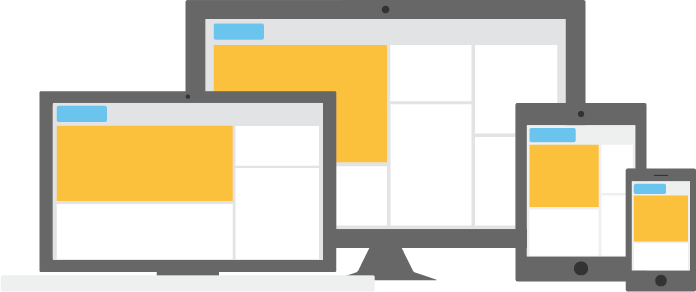

Digital Insight Design System
Goals
With the Digital Insight Design System you can build custom banking applications with a consistent Digital Insight look and feel without reverse engineering our styles! It is a single underlying system that allows for a unified experience across platforms and device sizes. The system is comprised of two distinct areas with information and resources for designers and developers. Version releases will be made available whenever Digital Insight updates the user interface for its digital solutions.


Resources for download
Download the resources you need for your project - from layout templates to SVG icons, as well as style guides for mobile banking and single sign on widgets that will keep all projects in sync with Digital Insight.
Easy to do the right thing.
From detailed UI element specifications and guidance on layouts and patterns, to coded components for developers, it's even easier to create seamless, responsive design experiences.
HTML & CSS
Coming in 2017, developer tools will enhance the Digital Insight Design System with Bootstrap-based UI components in HTML5, CSS3, and AngularJS that are ready to paste into your projects.
Detailed Styleguide
Your one-stop resource for current style information for Digital Insights' digital banking solutions. Whether you need specs to create screen elements, direction on using the grid system, or pattern examples, we’ve got you covered.
Responsive Layout
The Digital Insight Design System is intended to expand your responsive product offering. Combining the bootstrap framework with our responsive UI specs, components, and layout guidelines will increase your productivity, testing, and delivery of applications that look great – and work great – from desktop to tablet and mobile.